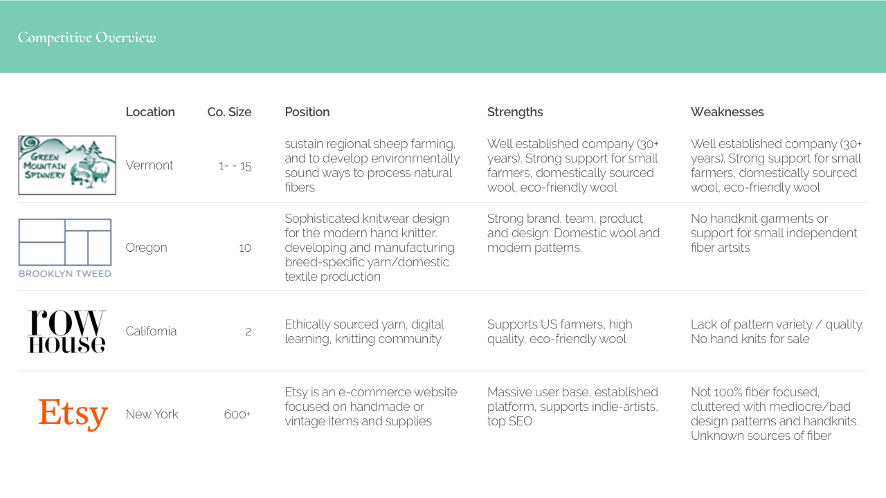
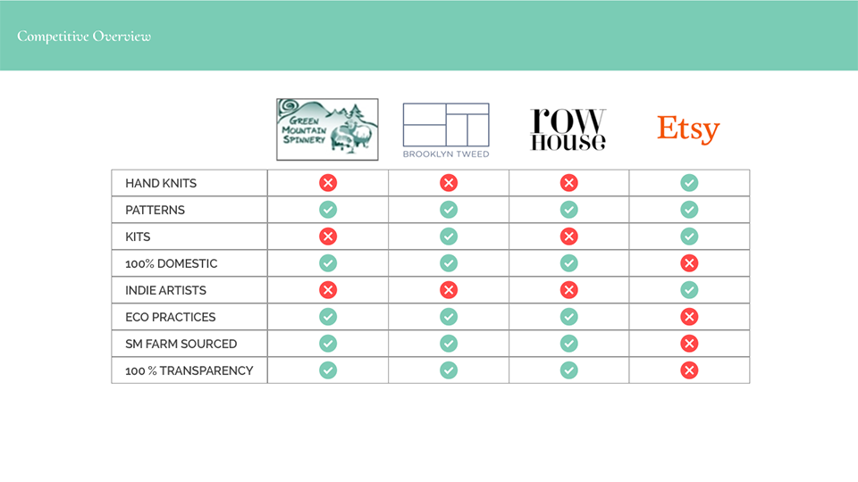

"
Second to oil, fashion and textiles is the most polluting industry in the world. Every stage in a garment’s life threatens our planet and its resources
- Rachel Kibbe ( Business of fashion)
Fast fashion comes at a great price to both human life and the environment. Forced labor is pervasive in garment factories and labor intensive crops such as cotton 1. Further damage is done by the use of toxic chemicals that make their way into the environment and into our bodies.
A slow fashion marketplace dedicated using ethically produced domestic fiber. A marketplace that connects fiber artists, fashion enthusiasts, and designers with small farms. 100% transparency from sheep to shawl.
A competitive analysis lead me to look deeper into companies that produce domestic fiber or have an established platform for independent fiber artist. Green Mountain Spinnery, Brooklyn Tweed, Row House, and Etsy are the four companies I focused on. While each company has considerable strengths, the market still lacked a dedicated slow-fashion platform with full transparency that offered both eco-friendly fiber for artists and ethically made garments.
 